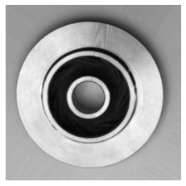
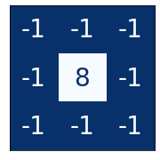
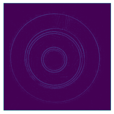
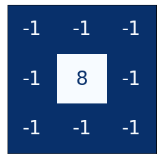
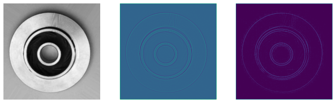
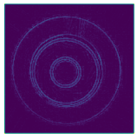

General Applications of Neural Networks
Session 3: Computer Vision Part 1¶
Instructor: Wesley Beckner
Contact: wesleybeckner@gmail.com
In this session we will turn our magnifying glass over to images. There are many application-centric subdomains of machine learning and this is one of them (another would be natural language processing). We can use the power of image related machine learning to replace, augment, or optimize what would typically be reserved for a humans.
In this session we will:
- Use modern deep-learning networks using keras
- Design CNNs
- Learn about feature extraction in convolutional layers
- Learn about transfer learning
- Utilize data augmentation in the context of images
images in this notebook borrowed from Ryan Holbrook
3.0 Preparing Environment and Importing Data¶
3.0.1 Import Packages¶
import matplotlib.pyplot as plt
from tensorflow.keras.models import Sequential
from tensorflow.keras.layers import Activation, Dropout, Flatten, Dense, Conv2D, MaxPooling2D
from tensorflow.keras.callbacks import EarlyStopping
import numpy as np
import tensorflow as tf
from tensorflow.keras.preprocessing import image_dataset_from_directory
import numpy as np
from itertools import product
def show_kernel(kernel, label=True, digits=None, text_size=28):
# helper function borrowed from Ryan Holbrock
# Format kernel
kernel = np.array(kernel)
if digits is not None:
kernel = kernel.round(digits)
# Plot kernel
cmap = plt.get_cmap('Blues_r')
plt.imshow(kernel, cmap=cmap)
rows, cols = kernel.shape
thresh = (kernel.max()+kernel.min())/2
# Optionally, add value labels
if label:
for i, j in product(range(rows), range(cols)):
val = kernel[i, j]
color = cmap(0) if val > thresh else cmap(255)
plt.text(j, i, val,
color=color, size=text_size,
horizontalalignment='center', verticalalignment='center')
plt.xticks([])
plt.yticks([])
3.0.2 Load Dataset + Segway Into Images¶
We're going to be working with a new kind of data structure today, an image. There are many ways to load images into python: matplotlib (plt.imread()), OpenCV (cv2.imread()), Pillow (Image.open()), scikit-image (io.imread()), tensorflow (tf.io.read_file() and tf.io.decode_jpeg()).
Let's give these a shot!
# Sync your google drive folder
from google.colab import drive
drive.mount("/content/drive")
Mounted at /content/drive
# image read libraries
from PIL import Image
import cv2
import matplotlib.pyplot as plt
import skimage
from skimage import io
### YOU WILL CHANGE TO THE PATH WHERE YOU HAVE TECH_FUNDAMENTALS ###
path_to_casting_data = '/content/drive/MyDrive/courses/TECH_FUNDAMENTALS/data/casting_data_class_practice'
technocast_train_path = path_to_casting_data + '/train/'
image_path = technocast_train_path + '/ok_front/cast_ok_0_1.jpeg'
# pyplot
import matplotlib.pyplot as plt
img1 = plt.imread(image_path)
print(type(img1))
print(img1.shape)
plt.imshow(img1)
plt.axis('off')
<class 'numpy.ndarray'>
(300, 300, 3)
(-0.5, 299.5, 299.5, -0.5)

# cv2
import cv2
img2 = cv2.imread(image_path)
print(type(img2))
print(img2.shape)
plt.imshow(img2)
plt.axis('off')
<class 'numpy.ndarray'>
(300, 300, 3)
(-0.5, 299.5, 299.5, -0.5)

# PIL
from PIL import Image
img3 = Image.open(image_path)
print(type(img3))
print(np.array(img3).shape) #conv to array
plt.imshow(img3)
plt.axis('off')
<class 'PIL.JpegImagePlugin.JpegImageFile'>
(300, 300, 3)
(-0.5, 299.5, 299.5, -0.5)

# skimage
import skimage
img4 = skimage.io.imread(image_path)
print(type(img4))
print(img4.shape)
plt.imshow(img4)
plt.axis('off')
<class 'numpy.ndarray'>
(300, 300, 3)
(-0.5, 299.5, 299.5, -0.5)

# tensorflow
img5 = tf.io.read_file(image_path)
img5 = tf.io.decode_jpeg(img5)
# conver to bw
img5 = tf.image.rgb_to_grayscale(img5)
# optionally could convert to an array
# img5 = np.asarray(img5)
print(type(img5))
print(img5.shape)
# drop the extra channel (3d squeezed into 2d, rgb to intensity/gray)
print(tf.squeeze(img5).shape)
plt.imshow(tf.squeeze(img5), cmap='gray', vmin=0, vmax=255)
plt.axis('off')
<class 'tensorflow.python.framework.ops.EagerTensor'>
(300, 300, 1)
(300, 300)
(-0.5, 299.5, 299.5, -0.5)

🏋️ Exercise 1: Loading Images¶
Find 2 different images on the internet (any 2 of: jpg, png, and svg format). Load them into python as
- colored, and then also convert to
- grayscale
using tensorflow and pyplot. Convert to grayscale using tf.image.rgb_to_grayscale for one of the images and np.dot() for the other.
img_path2 = "/content/drive/MyDrive/courses/TECH_FUNDAMENTALS/data/squirtle.png"
# tensorflow
### YOUR CODE HERE ###
#<my_var> = tf.io.read_file(<path_to_file>)
#<my_var> = tf.io.decode_jpeg(<my_var)
# extra channel (alpha channel for opacity, sometimes)
#<my_var> = tf.image.rgb_to_grayscale(<my_var>[indexed_at_rgb_values])
# plt.imshow(tf.squeeze(my_var_so_that_it_is_reduced_to_one_chanel), cmap='some_scheme')
img_path3 = "/content/drive/MyDrive/courses/TECH_FUNDAMENTALS/data/ghastly.jpg"
# pyplot
### YOUR CODE HERE ###
# <my_var> = plt.imread(<path_to_file>)
# extra channel (alpha channel for opacity, sometimes)
# <my_var> = np.dot(<my_var>[indexed_at_rgb_values], rgb_weights)
# plt.imshow(<my_var>, cmap='some_scheme')
3.1 The Classifier Structure¶
Convolutional neural networks (CNNs, Convnets) take the gold for machine vision. We'll talk about what convolutional layers are in a moment. For now lets talk about the general structure of these types of neural networks.
A CNN consists of a base and a head.

The base is used to extract the relevant features from the image. It consits mainly of convolutional layers. The head is used to map those features to the classification task and mostly consits of dense layers.
What is a visual feature? It is a relevant abstraction from the image data, often edges and shapes, that then form more abstract objects like eyes, ears or wheels and windows:

note: this is an oversimplification but it gives the general idea.
A classification NN will always have this phenomenon where, early in the network layers are learning features, and later in the network layers are appropriating those features to different classes. In a CNN this phenomenon is accentuated by the base-head dynamic. Given that the feature generation task can be very similar across images, often we use the base of a pretrained model. This strategy is called transfer learning and is extraordinarily powerful when dealing with small datasets!
"When doing transfer learning, it's generally not a good idea to retrain the entire base -- at least not without some care. The reason is that the random weights in the head will initially create large gradient updates, which propogate back into the base layers and destroy much of the pretraining. Using techniques known as fine tuning it's possible to further train the base on new data, but this requires some care to do well." -kaggle gurus

3.2 Convolutions, ReLU and Maximum Pooling¶
We'll now discuss the three heavy-weights for convolutional networks: convolutions, rectified linear units, and maximum pooling. You can think of these as the agents of three primary steps in a convolutional network:
- Filter an image down to features (convolution)
- Detect that the feature is present (ReLU)
- Condense the image to enhance the features (maximum pooling)
These three steps are demonstrated in the following image:

3.2.1 The Convolution¶
The convolutional layer carries out the filtering step. We can create a convolution in keras like so:
from tensorflow import keras
from tensorflow.keras import layers
model = keras.Sequential([
layers.Conv2D(filters=64, kernel_size=3), # activation is None
# More layers follow
])
Let's talk about the hyperparameters in Conv2D.
The weights a CNN learns are primarily in its kernels. The kernels are a collection of arrays that are passed over the image to produce weighted sums. An example of a 3x3 kernel:

As the kernel is swept over the image, it acts to accentuate certain features. For instance, some kernels will bring out vertical edges, some horizontal edges, others will accentuate gradients in a general sense.

As we train our CNN, it learns what kernels are best for learning relevant features for the classification task. We set the number of kernels with the filters hyperparameter and the shape with kernel_size. The shape will usually be an odd number so that the kernel is oriented around one center pixel, but this is not a requirement.
3.2.2 Activations¶
The activations also called feature maps are the output from the kernels. We can see an example:

Notice that the left and middle kernels are augmenting horizontal boundaries.
3.2.3 ReLU¶
The ReLU should be familiar by now. It appears here in CNNs to further isolate the presense of features in the feature maps. Remember that it sets anything below 0 to simply 0. In a way it is saying, anything that is unimportant, is equally unimportant. Let's see it in action:

And, just as with dense layers, the ReLU allows us to create non-linear relationships within our network, something that we definitely want.
🏋️ Exercise 2: Experiment with Kernels¶
image = tf.io.read_file(image_path)
image = tf.io.decode_jpeg(image)
plt.figure(figsize=(6, 6))
plt.imshow(tf.squeeze(image), cmap='gray')
plt.axis('off')
plt.show();

import tensorflow as tf
kernel = tf.constant([
[-1, -1, -1],
[-1, 8, -1],
[-1, -1, -1],
])
plt.figure(figsize=(3, 3))
show_kernel(kernel)

# Reformat for batch compatibility.
image = tf.image.rgb_to_grayscale(image)
image = tf.image.convert_image_dtype(image, dtype=tf.float32)
image = tf.expand_dims(image, axis=0)
# Prep the kernel
kernel = tf.reshape(kernel, [*kernel.shape, 1, 1])
kernel = tf.cast(kernel, dtype=tf.float32)
image_filter = tf.nn.conv2d(
input=image,
filters=kernel,
# we'll talk about strides and padding in the next session
strides=1,
padding='SAME',
)
plt.figure(figsize=(4, 4))
plt.imshow(tf.squeeze(image_filter))
plt.axis('off')
plt.show();
And now the ReLU step:
image_detect = tf.nn.relu(image_filter)
plt.figure(figsize=(4, 4))
plt.imshow(tf.squeeze(image_detect))
plt.axis('off')
plt.show();

We're going to wrap these steps into a function and simply play around with the kernel to see how it changes the feature mapping for this impellar.
def apply_the_KERN(kernel):
fig, ax = plt.subplots(1, 3, figsize=(12, 4))
image_path = technocast_train_path + '/ok_front/cast_ok_0_1.jpeg'
image = tf.io.read_file(image_path)
image = tf.io.decode_jpeg(image)
# Reformat for batch compatibility.
image = tf.image.rgb_to_grayscale(image)
image = tf.image.convert_image_dtype(image, dtype=tf.float32)
image = tf.expand_dims(image, axis=0)
kernel = tf.reshape(kernel, [*kernel.shape, 1, 1])
kernel = tf.cast(kernel, dtype=tf.float32)
image_filter = tf.nn.conv2d(
input=image,
filters=kernel,
# we'll talk about strides and padding in the next session
strides=1,
padding='SAME',
)
ax[0].imshow(tf.squeeze(image), cmap='gray')
ax[0].axis('off')
ax[1].imshow(tf.squeeze(image_filter))
ax[1].axis('off')
image_detect = tf.nn.relu(image_filter)
ax[2].imshow(tf.squeeze(image_detect))
ax[2].axis('off')
For this exercise create 2-3 kernels and show how they accentuate different features:
kernel = tf.constant([
### YOUR KERNEL HERE ###
[-1, -1, -1],
[-1, 8, -1],
[-1, -1, -1],
])
show_kernel(kernel)
apply_the_KERN(kernel)


notice anything with different patterns? What happens when the sum of the kernel is more than 0? more than 1?
3.2.4 Condense with Maximum Pooling¶
In this last step that we'll cover, we're going to condense the image in a way that accentuates the identified features. This is done with MaxPool2D layer in keras
A MaxPool2D layer isn't much different from a Conv2D layer other than that, instead of taking a sum, the kernel (not really a kernel) just returns the maximum value. kernel_size is replaced with pool_size and there are no trainable weights (hence not a kernel).

Features are indeed intensified by the max pooling, but another way to think of this is that carrying all those empty "black" pixels through the network is computationally expensive without adding much information. Max pooling is a quick and dirty way of consolidating the network and retaining only the most salient information.
image_condense = tf.nn.pool(
input=image_detect, # image in the Detect step above
window_shape=(2, 2),
pooling_type='MAX',
# we'll talk about strides and padding in the next session
strides=(2, 2),
padding='SAME',
)
plt.figure(figsize=(4, 4))
plt.imshow(tf.squeeze(image_condense))
plt.axis('off')
plt.show();

3.3 Enrichment: Practice with Global Average Pooling¶
Usually at the end of the convolutional blocks, we use a Flatten() layer to convert the 2D arrays of feature maps to 1D to feed into the Dense layers of the network. Another method that has become popular is to use Global Average Pooling. With this schematic, each feature map is turned into an average. By this method, the head of the CNN now only has to make a classificaiton based on how turned on the feature maps are, indicated by the result of the global average pooling. We would implement this with keras like so:
model = keras.Sequential([
pretrained_base,
layers.GlobalAvgPool2D(),
layers.Dense(1, activation='sigmoid'),
])